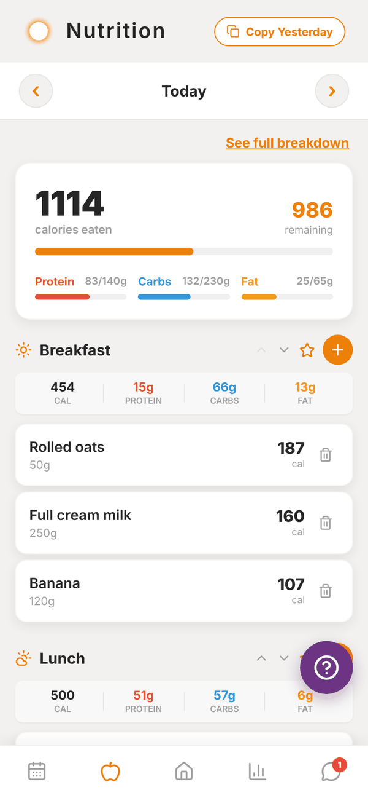
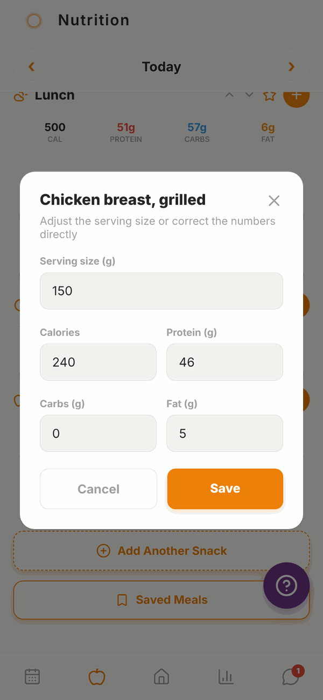
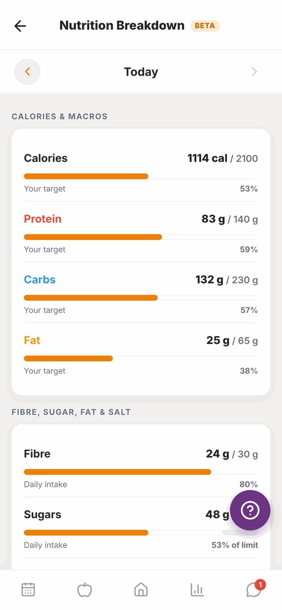

Totality for clients
Your food log
See what you've eaten today against your targets, move between days, edit or delete foods, and see your full nutrition breakdown.
Tap the apple button at the bottom of the screen to open your food log, called Nutrition. You can also tap Log food → on Home.

The top of the screen#
- Today with arrows either side. Tap ‹ to go back a day, › to go forward. You can go back 7 days and forward 3 days.
- See full breakdown opens every nutrient for the day (see below).
- A big card showing calories eaten and how many are remaining, with bars for Protein, Carbs and Fat against your targets.
If you don't have targets, you'll see No targets set: ask your trainer to set your macros. See Nutrition targets.
Copy yesterday#
Eat the same thing most days? On today's log, tap Copy Yesterday at the top right and everything you logged yesterday is copied into today, meal by meal. If today already has food in it, the app asks first, then adds yesterday's on top. If there was nothing logged yesterday, it says so.

Meals#
Below the card are your meals: Breakfast, Lunch, Dinner and Snack. Each shows its total calories, protein, carbs and fat, and every food in it.

Each meal header has these buttons:
| Button | What it does |
|---|---|
| Orange + | Add a food to this meal. See Adding food. |
| Star | Save everything in this meal as a saved meal, so you can log it again in one tap. See Saved meals and water. |
| Up and down arrows | Move the meal up or down the list. |
An empty meal says Tap to add food.
Need more snacks? Tap Add Another Snack at the bottom. You can have up to five.
Tap Saved Meals at the bottom to log one of your saved meals.
Change or delete a food#
To change a food, tap it. Change the Serving size and the numbers update. You can also correct the Calories, Protein, Carbs or Fat directly. Tap Save.

To delete a food, tap the bin button on its right, then tap the tick to confirm.
Full nutrition breakdown#
Tap See full breakdown at the top of the food log.

You'll see a bar for every nutrient for that day:
- CALORIES & MACROS against your targets.
- FIBRE, SUGAR, FAT & SALT against the daily intake on Australian food labels.
- VITAMINS and MINERALS against recommended daily amounts.
Use the arrows to change the day. This screen is marked BETA. A total only counts foods that list that nutrient, so if some of your foods don't have vitamin details, the screen says so.
Questions#
Can I log food for tomorrow?
Yes, up to 3 days ahead. Tap the › arrow at the top. Handy for planning.
Can I go back further than a week?
No. The food log goes back 7 days. Your trainer can still see your older logs.
Why is "remaining" a negative number?
You've eaten more than your calorie target for the day. That's fine now and then. Your trainer sees your overall pattern.
Can my trainer see my food log?
Yes. That's how they can help with your nutrition.
Where did my food go?
Check you're looking at the right day (the label between the arrows), and that you scrolled down to the right meal.
I use Totality Nutrition too. Will my food show here?
Yes. Both apps share the same food log when you use the same account. See Using Totality Nutrition too.